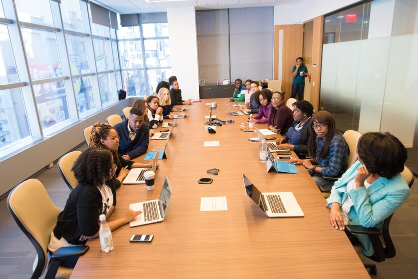
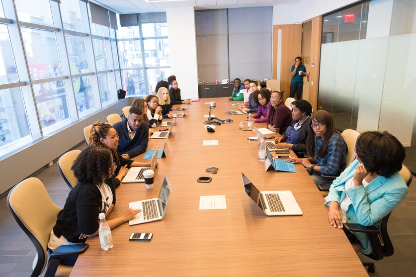

Overview
Purpose
To provide a platform for professional consulting services in the field of business management, assisting small to medium-sized businesses in improving their operations and achieving their objectives. The site's ultimate goal is to be a one-stop shop for all business management consulting needs.
Audience
Small to medium-sized businesses, entrepreneurs, and start-ups in need of expert advice and assistance in business strategy, operations, finance, and growth.
Branding
Website Logo
Style Guide
Color Palette
Palette URL: https://coolors.co/palette/7caff1-a42212-000000-fad20c-ffffff-c6c6c6| Primary | Secondary | Accent 1 | Accent 2 |
|---|---|---|---|
| [#396E94] | [#7CAFF1] | [#FAD20C] |
Typography
Heading Font: Permanent Marker
Paragraph Font: Roboto
Normal paragraph example
Sorgbor Consultants has a team of experienced consultants with diverse backgrounds and expertise, allowing them to provide customized solutions to meet the unique needs of each client. The company is known for its client-centric approach, which involves working closely with clients to understand their challenges and goals and delivering tailored solutions that meet their needs.
Colored paragraph example
The company is committed to providing high-quality services and building long-term relationships with clients to support their growth and success. Do you think you need some level of assistance and expert advice? If Yes, then Sorgbor Consultants is here to make that light shine on your business.
Navigation
Site Map
Content
Home page
Unlocking the full potential of businesses through innovative solutions and strategic thinking, driving growth and success in the modern economy. THE EASY GOAL POST
Sorgbor Consultants is a team of experienced consultants who have a proven track record of helping businesses improve their operations, increase their profits, and stay competitive in today's ever-changing market. Whether you're looking to streamline your processes, expand your customer base, or develop a new product or service, we have the knowledge and skills to guide you every step of the way.
Work With Us
At our consulting firm, we believe that every business is unique, and that's why we take a personalized approach to every client we work with. You will be provided with professionals who take their time to understand your specific needs and goals, and then develop customized solutions that are tailored to your business.
Become a Member of Our Team of Consultants
Do you want to be a part of our team? Apply to be a part of our next recruitment cycle. Our team comprises of people from all walks of life.
Images for the Home page
 

Our Services
Sorgbor Consultants can provide medium-sized businesses, entrepreneurs, and start-ups with a wealth of information and ideas that can help them improve their operations and achieve their goals. Here are just a few examples of the types of content and resources that Sorgbor Consultants could provide: Business strategy: One of the most important aspects of running a successful business is having a solid strategy in place. Our team will provide resources and advice on how to develop a business strategy that is tailored to your specific needs and goals. Financial management: Effective financial management is critical to the success of any business. Our consulting firm is going to provide resources and advice on how to effectively manage your finances, such as budgeting, cash flow management, and investment strategies. Marketing and sales: To expand your business and reach new customers, you must have an effective marketing and sales strategy in place. Sorgbor Consultants will provide resources and advice on how to create a marketing and sales plan that is specific to your company. Technology and innovation: Technology is constantly evolving, and it can be difficult for businesses to keep up with the latest trends and innovations. Sorgbor Consultants will provide resources and advice on how to use technology to improve your business operations, including advice on software and hardware solutions, cloud computing, and cybersecurity. Podcasts: Podcasts are an increasingly popular medium for sharing information and insights. Considering the level of your business and its competitive mode, we could create a podcast series featuring interviews with business leaders and experts, as well as discussions on various topics related to business management. Expert Interview: Interviews with experts in a variety of fields of business can provide valuable insights and advice to other business owners. Sorgbor Consultants will conduct interviews with business leaders, consultants, and academics in order to share their knowledge and expertise with the audience of the website. Holding webinars and workshops on a variety of topics, with expert speakers and interactive sessions. This plays a very big role in the betterment of your company because we believe in the concept of WYSIWYG (What You See Is What You Get). Sorgbor Consultants is not limited to anything. Your satisfaction is our topmost priority. We will do all of this on your behalf because we are aware of how competitive the business economy is right now.
So there you have it. If you are a small startup firm, we are here to help you succeed. Contact us today to learn more about our services and how we can help your business thrive.
Images for the Page 2


Contact Us
Contact US
Email Us!
First Name
Last Name
What do you want to share? Type your reply here.
For general inquiries, please email kusorgbor.emmanuel01@gmail.com or submit a comment:
Images for the Page 3
Wireframes
Create three wireframes for your site. One for each page and list them here
Home
[Any additional details about home that the wireframe does not make clear]
[Page 2]
[Any additional details about page 2 that the wireframe does not make clear]
[Page 3]
[Any additional details about page 3 that the wireframe does not make clear]